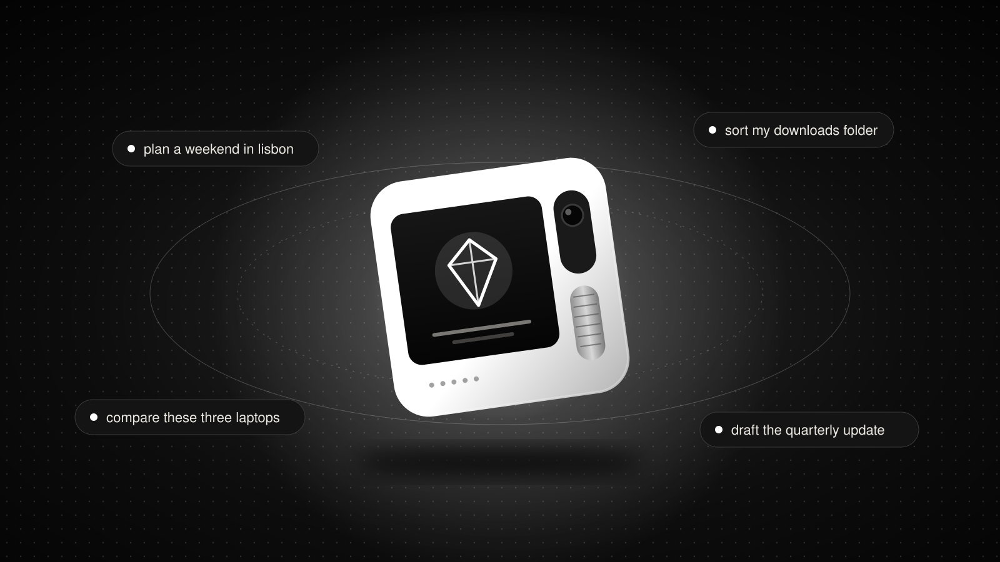
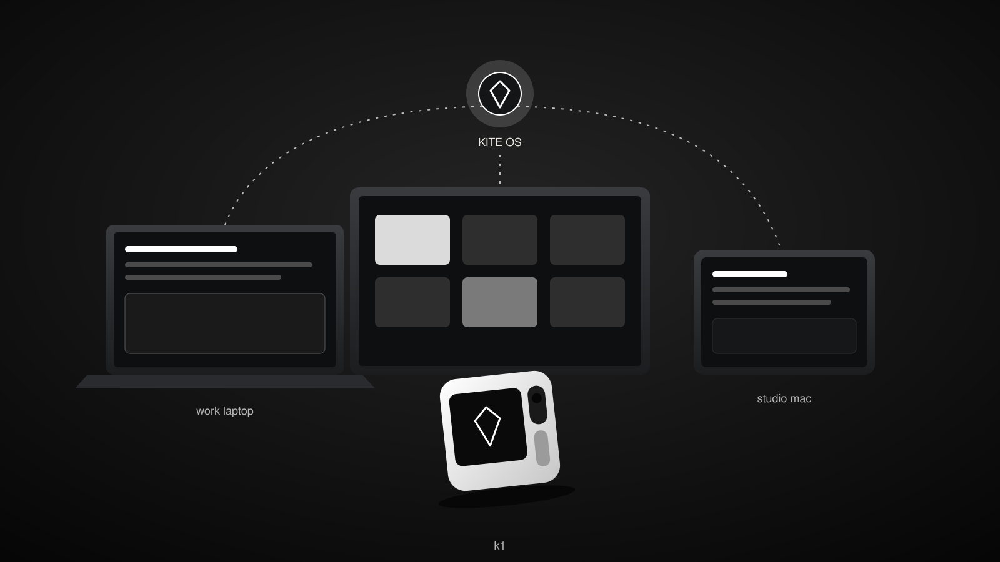

KITE OS
start with the idea.
tell it what you want to make, find or finish. KITE OS takes care of the steps in between, so you can stay on the part that matters.
try KITE OSthe operating system that operates itself.
you wanted an outcome. instead, you learned the software. open the app. find the menu. copy this. paste that. repeat.
KITE OS begins with the outcome. share what you have in mind, even if it's only half an idea. it handles the steps and checks in only when a choice is truly yours.
- an idea on the commute
- send KITE the task from your phone and let it start on your connected computer before you're back at your desk.
- research that's ready to use
- turn a dozen open tabs into a clean comparison or a finished slide deck. not one more pile of links.
- the folder you keep avoiding
- let KITE sort, rename and file everything on your connected computer in one pass, instead of one file at a time.

the computer stops being something you operate. it becomes something you direct.
pick up where you left off.
your next request shouldn't need a full recap.
KITE OS keeps memory and context around your work. add what matters, correct what changes, and spend your time moving forward instead of re-explaining the setup.
you don't have to watch, either. start a long task, close the tab, and KITE keeps going while you do something else.
- less starting over
- preferences and context you've shared carry into the next request. you're continuing a conversation, not beginning from zero.
- less waiting around
- hand off a long job without keeping its window open. come back to finished work instead of staying to watch it happen.
- more you can hand off
- add compatible skills for the jobs you want KITE to take on, rather than building every useful routine yourself.

you move on. the work keeps moving.
your AI shouldn't live in one app.
an answer in a chat window isn't a finished job. not when the files, tools and next steps live somewhere else.
KITE OS works where the task is. reach it on the web, in your messaging apps or on k1, and let it act on the computers you choose to connect.
- wherever you are
- start from a browser, a message or a button press. the same KITE, the same memory, wherever you happen to be.
- where your work already lives
- connect your own computers so KITE can open, edit and organise files right where they are kept.
- through your software, too
- when there's no shortcut, KITE can work through the apps you already use, the same way you would.

one assistant. every place you work.
switch the AI. keep what makes it yours.
models improve every few months. your setup shouldn't have to start over every time they do.
bring your own API key and choose what powers KITE OS. your memory, skills and connected computers stay exactly where they are.
keep what you've built. bring your own key.
KITE OS in your pocket.
remembered something on the way out? press the button, say what needs doing and set it in motion. k1 is a direct line to KITE OS, without opening another app.

KITE OS questions.
start with something you care about.
a chore you keep postponing. an idea you haven't had time to try. tell KITE OS what you have in mind.